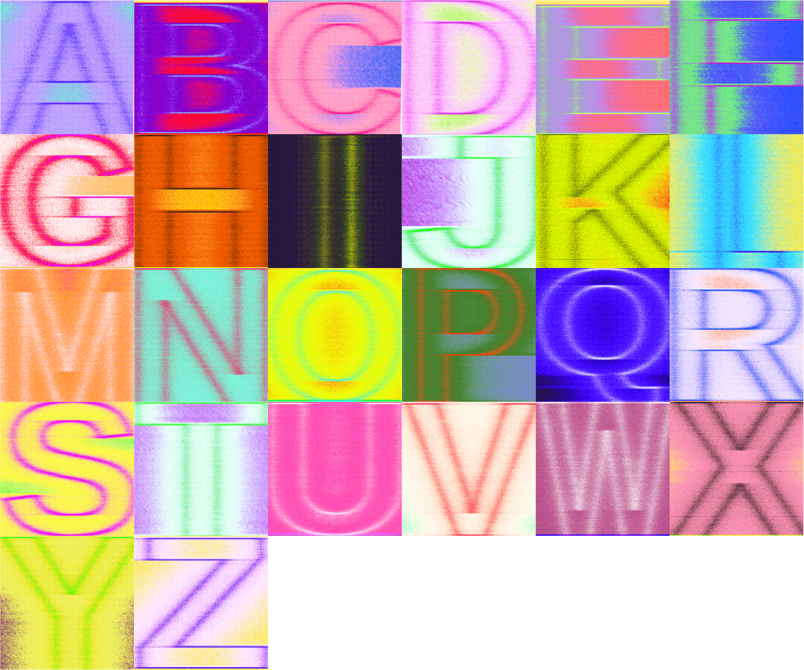

This exercise aims to explore the beauty that a computer can create with code—in particular, javascript.
...
Using the package p5.js, sine-waves, & a lot of elbow grease, these analog-esque images came fourth from the input of Liberation Sans letters into my custom code.

coded, experimental type
Using the package p5.js, sine-waves, & a lot of elbow grease, these analog-esque images came fourth from the input of Liberation Sans letters into my custom code.